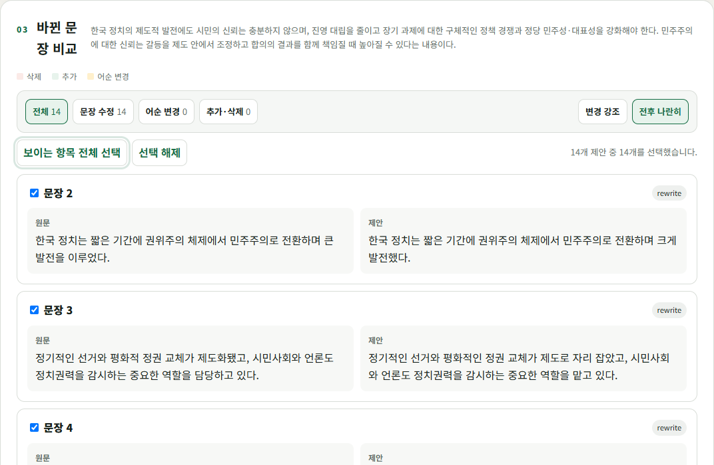

조사와 의존 명사
표면형을 일괄 치환하지 않고 문맥에서 품사를 먼저 확인합니다.
LOCAL-FIRST KOREAN WRITING REVIEW
KR-humanizer는 글을 쓰기 전에 맥락 노드를 고르고, 초안에서는 과잉설명 노드를 제외한 뒤 바뀐 문장만 Git형 Diff로 검토하는 로컬 우선 한국어 윤문 도구입니다.
이 설명문은 순수 AI로 작성 후 해당 툴로 윤문한 것입니다.
이 기능은 사용자들이 글을 읽는 것에 있어서 보다 더 편하게 느낄 수 있도록 도와줍니다.
이 기능은 사용자가 글을 더 편하게 읽도록 돕습니다.
사람처럼 보이게가 아니라
사람이 읽기 좋게.
01 / WORKFLOW
윤문 결과를 통째로 교체하지 않습니다. 각 단계가 눈에 보이고 되돌릴 수 있습니다.
프롬프트에서 노드를 먼저 만들거나 초안의 문단 흐름을 가져옵니다.
노드의 내용과 순서를 고치고 필요 없는 설명은 제외합니다.
문단, 문장 길이, 기본 오탈자와 비가시 문자를 로컬에서 확인합니다.
활성 노드와 설명률을 Codex 또는 Claude Code CLI에 전달합니다.
Git형 Diff를 비교하고 원하는 문장만 결과에 반영합니다.
02 / KOREAN KNOWLEDGE
띄어쓰기, 문장 부호, 상대 높임, 문장 성분 호응과 공공언어 지침을 출처·적용 조건·경계와 함께 Markdown 카드로 관리합니다.
Obsidian 지식 저장소 살펴보기 →표면형을 일괄 치환하지 않고 문맥에서 품사를 먼저 확인합니다.
청자 높임과 문장 속 인물의 높임 관계를 구분합니다.
행위 주체가 원문에 있을 때만 문장을 명확하게 풉니다.
03 / CONTROL
어색한 표현과 기본 오류만 가장 적게 바꿉니다.
명료성, 흐름과 문장 길이를 함께 다듬습니다.
문체 혼용과 모호한 지시어까지 넓게 살핍니다.
주장과 조건을 남기고 중복만 덜어냅니다.
04 / REAL INTERFACE
홍보용 합성 화면이 아니라 로컬 GUI에서 캡처한 문장별 비교와 선택 상태입니다.

05 / START
npm install -g github:kuseumkkrkkr/KR-humanizerkr-humanizer gui